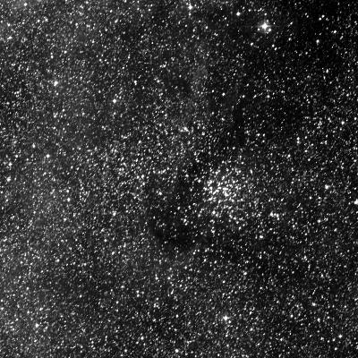

An Unofficial Catalogue of Visual Double Open Clusters
This catalogue is my attempt to keep a running list of the visual double open clusters I come across at the eyepiece. Of course, what counts as a “visual double” depends entirely on the telescope and eyepiece. For this list, my working definition of a visual double is any pair of open clusters that shares the same field of view in my 12-inch SkyWatcher Dob with a 35 mm Panoptic eyepiece — a true field of about 1.6°.
The list skews southern hemisphere because that’s where I observe, and it is a work in progress — I’ll add pairs as I come across them. Cluster names link to their entries in the object catalogue, where you’ll find the full notes, DSS plates, and finder charts.
| Pair | Constellation | RA (J2000) | Dec (J2000) | Mag | Observing notes |
|---|---|---|---|---|---|
| Carina | 11h 10.4m 11h 13.0m |
−60° 15′ −60° 47′ |
6.6 8.2 |
In the 35 mm Panoptic both clusters share the field with a loose clump of stars between them — the impression is of three interacting clusters, and it is genuinely hard to tell where one ends and the next begins. Two bright patches of nebulosity (NGC 3579/3603) sit in the same view. (Apr 2026) | |
| Carina | 11h 17.5m 11h 19.7m |
−62° 44′ −63° 29′ |
8.2 8.5 |
Halfway along the line from IC 2602 to λ Centauri. In the 35 mm Panoptic both clusters fit in the same field for a lovely contrast: IC 2714 a large, relatively dense disk of 60+ stars spread across ∼15′, Mel 105 packed into just ∼5′ with only a few members resolved at low power. Highlighted as a pair by O’Meara in Deep-Sky Companions: Southern Gems. (Apr 2026) | |
| Carina | 10h 43.0m 10h 42.2m |
−64° 24′ −65° 06′ |
1.9 8.0 |
A slightly asymmetric pair. IC 2602 (the Southern Pleiades) is too large for any eyepiece — best appreciated in binoculars or the finderscope — but nearby Mel 101 tucks into the edge of its field as a modest cluster of 30–40 stars forming a clear “figure-8” shape. Comfortably squeezed into a single field with a small refractor. Not physically associated: Mel 101 lies ∼14× more distant than IC 2602. (Apr / Jul 2026) | |
| Ara | 16h 44.1m 16h 46.2m |
−47° 28′ −47° 01′ |
7.4 8.2 |
With NGC 6193 centred in the finder, this pair drops together into one 35 mm field — a great contrasting pair. NGC 6200 is the tight, densely packed one: 30+ stars, with a chain of four brighter stars tapering off the top. NGC 6204 sits on the other side as a small, dense knot with a triplet of bright stars hanging off one edge. Observed in the Club 17.5″; would fit the 12″ field too. (Sep 2025 & Jul 2026) | |
|

NGC 6134
Hogg 19 |
Norma | 16h 27.8m 16h 29.0m |
−49° 09′ −49° 07′ |
7.2 — |
NGC 6134 is a dense circular disk of 60+ stars across ∼10′, easy to pick out from the rich Norma star fields even against a nebulous background. A second, smaller knot of stars off to one side is the sparse open cluster Hogg 19, sitting about a quarter of a degree away. Observed in the Club 17.5″; would fit the 12″ field too. Hogg 19 has no catalogued V magnitude. (Jul 2026) |
Positions and magnitudes drawn from my object catalogue, which itself cross-checks Stellarium against SIMBAD when each object is added. If a favourite pair is missing, it just means I haven’t come across it in the eyepiece yet — it’ll be added when I do.